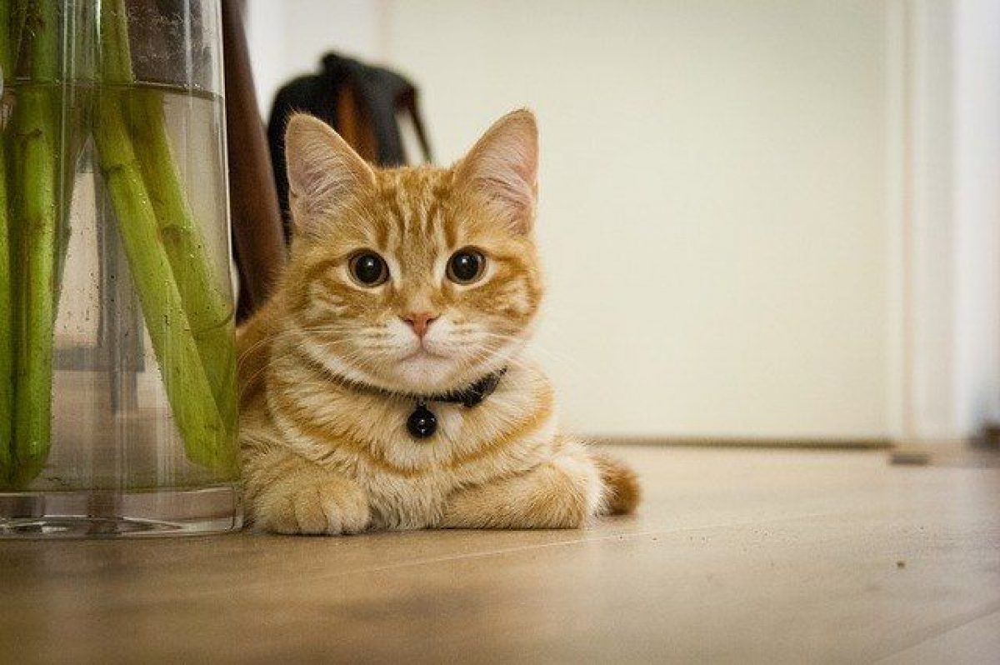

Pagina de gatitos naranjas pachoncitos
Imagenes de gatitos


si quieres ver más imagenes de gatitos, da click en este enlace.
Listas de gatitos
3 cosas que los gatitos
aman
- Arena
- Jugar
- Dormir
3 Cosas que los gatitos odian
- Bañarse
- Caricias
- Tener hambre